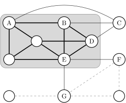

ClusterONE Cytoscape plugin
| Author: | Tamás Nepusz, Haiyuan Yu, Alberto Paccanaro |
|---|---|
| Contact: | tamas@cs.rhul.ac.uk |
Introduction
This is the documentation of the ClusterONE Cytoscape plugin, created by Tamás Nepusz, Haiyuan Yu and Alberto Paccanaro.
If you use results calculated by ClusterONE in a publication, please cite one of the suggested references.
The one-minute guide to using ClusterONE
ClusterONE is distributed in a Java archive file (JAR), which contains both the command line application and the Cytoscape plugin. In this document, we are assuming that you want to use ClusterONE from the Cytoscape graphical user interface. If you are interested in the command line interface, please refer to the documentation distributed with the command line interface itself.
ClusterONE can be installed from the Cytoscape plugin manager. Launch Cytoscape if you have not done so, click on the Manage plugins item of the Plugins menu, select the Analysis subgroup within the Available for install category, select the line starting with ClusterONE and click on the Install button. Cytoscape should download and install the selected version of ClusterONE for you. If you see more than one version of Cluster ONE, make sure you install the most recent one. If you don't see any Cluster ONE version, first check whether you have installed it already (look for a menu called ClusterONE within the Plugins submenu), and if you haven't, check the Show outdated plugins checkbox in the Manage plugins dialog.
If you managed to install ClusterONE successfully, you should see a new menu item called ClusterONE in the Plugins submenu. Now, do the following:
- Load the network you wish to analyse into Cytoscape.
- Click on Plugins/ClusterONE/Start to start ClusterONE. This will add a new panel called ClusterONE to the control panels on the left.
- If your network is weighted, select the name of the weight attribute on the
ClusterONE control panel next to Edge weights. If you do not see the
desired attribute name, click on the Refresh button (
 ) next to
the combo box. If you still do not see it, make sure that the attribute is
registered in Cytoscape as a numeric attribute and not a string.
) next to
the combo box. If you still do not see it, make sure that the attribute is
registered in Cytoscape as a numeric attribute and not a string. - Click on the Start button at the bottom of the panel. ClusterONE should detect the densely connected regions of your network and list them in a new panel on the Cytoscape result panel, which is usually on the right hand side of the window.
- Clicking on a cluster in the result panel will highlight the cluster in the network view. Double-clicking on a cluster will extract it as a new subnetwork. Right-clicking on a cluster will bring up a context menu with additional operations that you might find useful.
- When you are finished with analysing the results, click on the Close
button (
 ) in the upper right corner of the result panel.
) in the upper right corner of the result panel.
Description of the algorithm
ClusterONE strives to discover densely connected and possibly overlapping regions within the Cytoscape network you are working with. The interpretation of these regions depends on the context (i.e. what the network represents) and it is left up to you. For instance, in protein-protein interaction networks derived from high-throughput AP-MS experiments, these dense regions usually correspond to protein complexes or fractions of them. ClusterONE works by "growing" dense regions out of small seeds (typically one or two vertices), driven by a quality function called cohesiveness.
Before we move on to the formal definition of cohesiveness, let us introduce some terminology that classifies vertices and edges of a graph G according to their relationship to a selected group of vertices V0. Vertices of V0 are called internal vertices, while vertices not in V0 are called external vertices. An edge that is situated between two internal vertices is an internal edge, an edge going between an internal and an external vertex is a boundary edge, and an edge between two external vertices is an external edge. An internal vertex incident on at least one boundary edge is an internal boundary vertex, while an external vertex incident on at least one boundary edge is an external boundary vertex. The following figure illustrates these concepts:
Here, V0 itself is denoted by a shaded background, which delimits internal and external vertices. Thick black edges are internal, thin black edges are boundary edges, while thin gray dashed edges are completely external. Vertices marked by a letter are (internal or external) boundary vertices.
The quality of the group can be assessed by the number of internal edges divided by the sum of the number of internal and boundary edges. This quality measure is driven by the fact that a well-defined group should have many internal edges and only a few boundary edges; in other words, the boundary of the group should be sharp. If the edges have weights (i.e. a numeric value assigned to each edge that quantifies how reliable that edge is or how confident we are in its existence), the same guidelines apply, but the number of edges should be replaced by the total confidence associated to those edges. Whenever you have such confidence values, store them in a numeric edge attribute in Cytoscape and use that attribute to drive the cluster growth process. From now on, such confidence values will simply be called edge weights and the above mentioned quality measure will be referred to as cohesiveness.
ClusterONE essentially looks for groups of high cohesiveness. This is achieved by adopting a greedy strategy: starting from a single seed vertex (or a small set of vertices that are strongly bound together), one can extend the group step by step with new vertices so that the newly added vertex always increases the cohesiveness of a group as much as possible. Removals are also allowed if removing a vertex from the group increases its cohesiveness. The process stops when it is not possible to increase the cohesiveness of the group by adding another external boundary vertex or removing an internal boundary vertex. See the ClusterONE paper [1] for the description of the exact procedure. The growth process is repeated either for every vertex or every connected vertex pair to obtain an initial set of cohesive subgroups. Subgroups smaller than a given size or having a density less than a given threshold are thrown away. Finally, redundant cohesive subgroups (i.e. those that overlap significantly with each other) are merged to form larger subgroups to make the results easier to interpret.
Control panel
The control panel of ClusterONE is to be found on a separate tab in the control panel of Cytoscape (see the left hand side of the Cytoscape user interface). The panel consists of two large parts: the Parameters box lets you set the parameters of the algorithm (this is subdivided into Basic parameters and Advanced parameters), while the Selection info box lets you examine some properties of the currently selected set of nodes (such as the total weight of edges within the set and at the boundary of the set, or the value of the ClusterONE quality function).
Click on the Start button at the bottom of the panel to start the clustering process. The result viewer will open automatically when the results are ready. Use the Close panel button to hide the ClusterONE control panel.
After a successful clustering process, the nodes of the network will be colored according to the number of clusters they participate in. Nodes that correspond to a single cluster only will turn red, nodes with multiple clusters will turn yellow. Gray nodes denote outliers (nodes that did not end up in any of the clusters). This coloring is implemented using a custom VizMapper style. The style is selected automatically when the clustering process finishes, but you can always return to your original style in the VizMapper panel of Cytoscape.
Parameters
The parameters are grouped into basic and advanced ones. In most of the cases, the default values of the advanced parameters should be fine, but the basic parameters may need to be adjusted to your specific needs.
Basic parameters
- Minimum size
- The minimum size of clusters deemed relevant by ClusterONE. This is a hard threshold: whenever ClusterONE finds a cluster smaller than the minimum size, the cluster will be discarded immediately.
- Minimum density
The minimum density of clusters deemed relevant by ClusterONE. The density of a cluster is the total sum of edge weights within the cluster, divided by the number of theoretically possible edges within the cluster. In other words, this is the average edge weight within the cluster if missing edges are assumed to have a weight of zero. Whenever ClusterONE finds a cluster that has a smaller density than the value given here, the cluster will be discarded immediately. Increase the minimum density if you get too many clusters and they seem too sparse, or decrease it if you are not getting enough clusters.
Since version 0.93, ClusterONE also includes an automatic density threshold selection method, which was tuned on various protein-protein interaction datasets. When the "Auto" value is selected in the minimum density field (this can be selected by trying to choose a density threshold smaller than zero), ClusterONE will use a density threshold of 0.3 for weighted networks and 0.5 for unweighted networks. If the network is unweighted and the global clustering coefficient is smaller than 0.1, ClusterONE will assume that the network was determined from low-throughput experimental data (e.g., yeast-two-hybrid experiments) and use a higher threshold of 0.6 to compensate for the presence of many tree-like subgraphs in the input.
- Edge weights
- A numeric edge attribute to be used for the edge weights. [unweighted]
means that each edge will have a weight equal to 1. If you don't see the
name of the attribute in the list, click on the Refresh button
() next to the combo box to re-scan the network for numeric edge
attributes. This is necessary when you added the edge attribute you are
looking for after you opened the ClusterONE control panel.
Advanced parameters
If you do not see these parameters in the control panel, click on the Advanced parameters label to expand the container holding them.
- Node penalty
- Penalty value corresponding to each node. When you set this option to a specific value x, ClusterONE will assume that each node has an extra boundary weight of x when it considers the addition of the node to a cluster (see [1] for more details). It can be used to model the possibility of uncharted connections for each node, so nodes with only a single weak connection to a cluster will not be added to the cluster as the penalty value will outweigh the benefits of adding the node. The default penalty value is 2.
- Merging method, Overlap threshold and Similarity function
After an initial set of clusters are found, ClusterONE tries to merge highly overlapping (and thus redundant) clusters in order to clean up the result. For each pair of clusters found, ClusterONE calculates a score that quantifies the overlap between them, and two clusters are merged if this overlap is larger than a given threshold (specified by the Overlap threshold textbox). There are four different ways to calculate the overlap score, as controlled by the Similarity function combobox:
- The match coefficient takes the size of the overlap squared, divided by the product of the sizes of the two clusters being considered, as in the paper of Bader and Hogue [2].
- The Simpson coefficient divides the size of the overlap by the size of the smaller cluster.
- The Jaccard similarity divides the size of the overlap by the size of the union of the two clusters.
- The Dice similarity divides twice the size of the overlap by the sum of the sizes of the two clusters.
Merging can be done in two different ways, as controlled by the Merging method combobox:
- The single-pass method calculates similarity scores between all pairs of complexes and creates a graph where the nodes are the complexes and two nodes are connected if the corresponding complexes have a score higher than the overlap threshold. Complexes in the same connected component of the graph will then be merged.
- The multi-pass method calculates similarity scores between all pairs of complexes and stores those pairs that have a score larger than the overlap threshold. The highest scoring pair is then merged and the similarity of the merged complex towards its neighbors is re-calculated. This is repeated until there are no more highly overlapping complexes in the result.
The default settings (match coefficient with a threshold of 0.8 using the single-pass algorithm) seem to be satisfactory for most use-cases Decreasing the threshold will result in more clusters being merged.
- Seeding method
ClusterONE works by growing clusters from initial "seeds", driven by a goal function that is maximized greedily (see the Cluster ONE paper [1] for more details). A seed can be an arbitrary subgraph, but in most cases, it is either a single node or a single edge. The seeding method prescribes how the seeds are selected during the calculation:
- From every node means that every node will be used as a seed.
- From unused nodes means that nodes will be tried in the descending order of their weights (where the weight of a node is the sum of the weights on its incident edges), and whenever a cluster is found, the nodes in that cluster will be excluded from the list of potential seeds. In other words, the node with the largest weight that does not participate in any of the clusters found so far will be selected as the next seed.
- From every edge means that every edge will be considered once, each yielding a seed consisting of the two endpoints of the edge.
In practical use-cases, the From unused nodes and From every node methods are almost equivalent, but the former one yields a smaller number of redundant clusters.
Selection info
The quantities shown in this box always correspond to the currently selected set of nodes in the current Cytoscape view.
- Number of nodes
- The number of nodes in the cluster.
- In-weight
- The sum of the weights of the edges that lie completely within the cluster.
- Out-weight
- The sum of the weights of the edges where one endpoint lies within the cluster and the other lies outside.
- Density
- The density of the cluster; that is, the sum of the edge weights within the cluster divided by the number of theoretically possible edges.
- Quality
- The quality of the cluster, as measured by the in-weight divided by the sum of the in-weight and the out-weight. The rationale behind this measure is that a good cluster contains many heavyweight edges within the cluster itself, and it is connected to the rest of the network only by a few lightweight edges. If the penalty value set in the Advanced parameters panel is larger than zero, the out-weight of the cluster will be increased by the penalty value times the number of nodes in the cluster accordingly.
- P-value
- The p-value of a one-sided Mann-Whitney U test performed on the in-weights and out-weights of the vertices. A low p-value means that the in-weights are significantly larger than the out-weights, so it is more likely that the cluster is a valid finding and not the result of random fluctuations. Color codes also help distinguishing significant results from insignificant ones: p-values less than 0.05 are denoted by red colors and p-values between 0.05 and 0.1 are shown in yellow.
Note that the Mann-Whitney U test cannot be performed sensibly when all the in-weights and out-weights are equal. In this case, the p-value will show "NA".
Result viewer
The result viewer appears on the right hand side of the Cytoscape user interface after a successful clustering process and it can operate in two modes: the simple view and the detailed view. When the result viewer is opened for the first time, the simple view is used, which shows each cluster in a scrollable list box along with some basic properties of the cluster (number of nodes, density, quality and p-value). The clusters are ordered according to ascending p-values. There is also a small toolbar above the list of clusters, where the number of clusters are shown along with small push buttons to access some of the functionality provided by the result viewer.
Simple view
The simple view uses two columns, the first column showing a schematic drawing of each cluster (driven by a simple force-directed layout algorithm) and the second showing some basic properties of the cluster. The clusters are drawn in the background, so if there are many large clusters, you may have to wait a little bit until you are able to see them all.
Right-clicking on any row of the table will bring up the cluster context menu. Double-clicking on any row will extract the cluster into a separate Cytoscape network view.
Detailed view
The detailed view can be turned on or off by clicking on the first button of the toolbar which shows a table (). It is advised to turn the detailed view on only if the result panel itself is detached from the main Cytoscape window or if it is wide enough, as the detailed view contains seven columns, the first showing a schematic drawing of the cluster itself, while the remaining six correspond to the properties seen earlier in the selection info box on the control panel (number of nodes, density, in-weight, out-weight, quality and p-value).
In the detailed view, you can sort the clusters according to any of the above columns by clicking on the column header. Clicking on the header again reverses the order.
Right-clicking on any row of the table will bring up the cluster context menu. Double-clicking on any row will extract the cluster into a separate Cytoscape network view.
Toolbar
- Switch to detailed view
- This button toggles between the simple view and the detailed view.
 Find clusters of selected nodes
Find clusters of selected nodes- By clicking this button, ClusterONE will evaluate all the nodes that are selected in the current Cytoscape network and select the clusters in which at least one of the selected nodes participate. It can primarily be used to find the cluster(s) of a single node after selecting that node in the main Cytoscape panel.
 Save clustering
Save clustering- Saves the clustering to disk in a file. You can choose between a simple line oriented format where each row corresponds to a single cluster, and the format used by the GenePro plugin.
- Close result
- Closes the result set (i.e. removes its tab from the Results panel of Cytoscape).
References
If you use results calculated by ClusterONE in a publication, please cite the following reference:
| [1] | (1, 2, 3) Nepusz T, Yu H, Paccanaro A: Detecting overlapping protein complexes from protein-protein interaction networks. Nature Methods, Advance Online Publication, 2012. doi:10.1038/nmeth.1938 |
Some other papers that might be of interest (and were referenced earlier in this help file):
| [2] | Bader GD, Hogue CWV: An automated method for finding molecular complexes in large protein interaction networks. BMC Bioinformatics 2003, 4:2. doi:10.1186/1471-2105-4-2 |